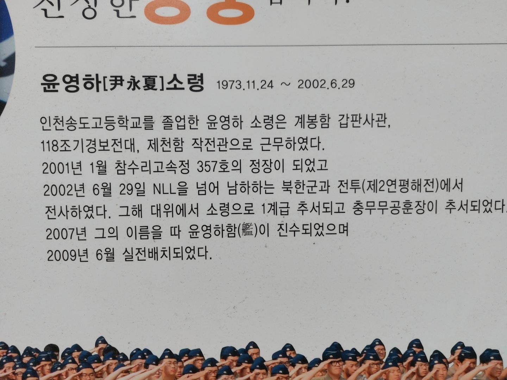
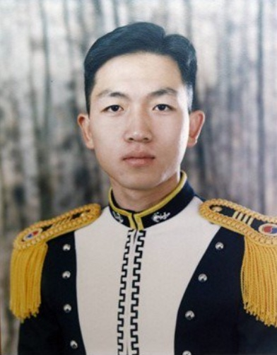
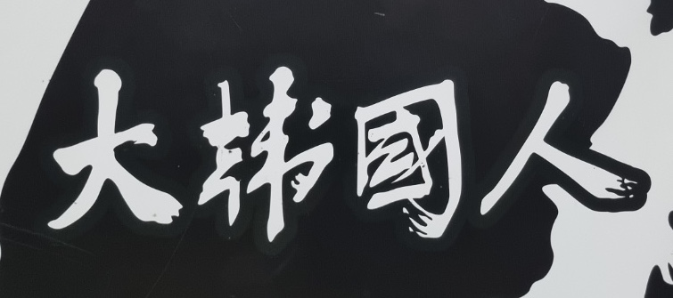
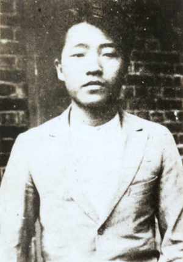
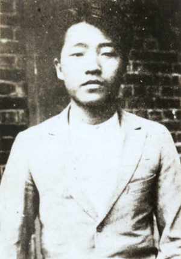
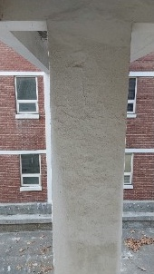

안녕~ 나는 송도고등학교 홍보 요정 송도봇이야~~
요즘 날씨가 너무 춥지?? 너희들이 감기에 걸릴까 걱정이야
어디에 가더라도 옷 잘 챙겨 입고 특히 안전사고에 주의 해야해
요즘 학교 생활은 어떠니?
학교 생황을 하며 힘들어하는 모습을 보면 너무 마음이 아파
그리고 요즘에는 학교에 대해 좋지 않게 생각하는 친구들도 있어서 속상해 ㅠㅠ
너희들에게 학교에 대한 긍정적인 마음을 심어주고자
학교를 빛낸, 그리고 빛낼 사람들을 소개해 줄까해 ^^
그냥 알려주면 재미없으니 나화 함께 학교 이곳저곳 둘러보며 함께 알아가 보자고
이 사진이 있는 곳으로 와줄래?
도착했니?
그럼 다음을 완성해볼래?
사-->4
암-->7
송-->5
19. . .
맞았어!! 근데 혹시 그 날이 무슨 날인줄 아니?
크리스마스?? 맞지만, 그 날은 장기려박사님의 기일이야.
장기려 박사님은 송도고등하교 출신의 의사선생님인데 이런 업적을 가지고 계셔!
장기려 박사(1911.08.14 ~ 장기려 박사 1995.12.25)
그의 가장 큰 업적은 1968년 청십자 의료보험을 창설, 많은 사람에게 골고루 나은 의료혜택을 입도록 한 것이다. 청십자의료보험조합은 1977년 의무의료보험조합이 출현하기 이전에 유일하게 성공했던 임의의료보험조합으로 전국적으로 의료보험조합 설립운동인 청십자운동을 일으키는 계기와, 의료보험조합의 필요성에 대해서 국민들에게 큰 인식의 전환을 마련시켰다.
다음으로 이동하자고~ 아침마다 하는 발열체크 장소 주변에 아주 큰 액자가 있다고 하던데...찾아보자!

북한 무전 도청을 통해 암호를 습득했다. 암호를 해독해야 해!
12 + 211 + 68

'나라를 위해 목숨 바치면서까지 자신의 임무를 잊지않은
윤영하 소령(1973.11.24. ~ 2002.06.29.)
'나라를 위해 목숨 바치면서까지 자신의 임무를 잊지않은 당신을 우리도 잊지 않겠습니다.'
2002년은 우리나라에서 월드컵이 개최된 해이기도 하지만, 제2연평해전이 발발한 해야. 제2연평해전에서 송도고의 영웅 윤영하 소령이 나라를 지키기 위해 북한군과 싸우다가 전사하셨지.
우리 모두 우리나라를 위해 돌아가신 윤영하 소령님과 호국영령들을 기리며 잠시 묵념하도록 하자.
다시한번 우리와 우리나라를 위한 위대한 희생을 기리며,
이제 다음으로 넘어가자.
급식실 근처 엄청 거대한 알이 있다던데 찾아볼래?
그 알이 다음 위치로 가는 길을 안내해 줄거야
도착했니?
그럼 그 알에 써있는 것과 아래를 숫자를 이용하여
네모칸에 있는 숫자를 모두 구해서 곱해볼래?
◻️14224◻️14◻️220
문제를 풀기 위해 알에 새겨져 있는 윤동주 시인의 서시를 읽어봤니?
우리가 아주 잘 알고 있는 독립운동가 겸 시인이시지~
근데 그거 알고 있니? 우리 학교 출신 독립유공자가 있어!!
궁금하다고?
그러면 아래 그림이 있는 곳으로 찾아와 줄래?

 

이광복 (1891 ~ ?)
이재유 (1905.08.28.~ 1944.10.26.)
고 이광복, 고 이재유
이 두 분은 우리학교 출신 동립유공자셔!!
원래 학교에 붙어 있지는 않지만 너에게 소개해주고 싶어 만들어 두었단다!
그럼 이제 다음으로 가기 위해 문제를 해결해봐야겠지?
187◻️01
2◻️193◻️
빈칸에 들어갈 숫자를 모두 더하면??
정답이야~~ 이제 다음 장소로 가보자고~~
송도고 학생들이 언제든지 Charles Babbage의 발명품을 사용할 수 있는 장소로 가볼까?
Q. 매일 두 배로 늘어나는 수련 잎들이 호수 전체를 덮는데 2023일이 걸린다면, 절반을 덮는데 몇 일이 걸릴까?
방금 정답은 컴퓨터 안에 있는 송도고의 역사 파일의 비밀번호야!
파일을 열어보면 다음 장소를 알려줄거야!
잠긴 자물쇠를 풀고 다음으로 넘어가는 코드를 입력하자.
미안하지만 다음 사람을 위해 코드 번호를 알아낸 뒤에는 꼭 다시 자물쇠를 채우고 돌려줘!!
‘학교폭력근절’
요즘 학교폭력이 많이 증가하고 있다고해 ㅠㅠ
청소년 보호 상담신고 번호를 알고 있니?
학교에 이를 홍보하는 액자가 있다던데 찾아볼까?
(등교할 때 꼭 지나야 하는 곳을 둘러보자)
부디 학교 폭력이 꼭 사라기질 바래 ㅠㅠ
아 맞다 우린 우리의 일을 해야지!
마음의 눈으로 보면 우리학교를 빛낸 인물을 알 수 있을거야!!
중앙현관으로 가서 체육계 44번째 이름을 입력하세요.
전성현(농구선수) 1991.11.05. ~
대한민국의 現 고양 캐롯 점퍼스 소속 농구선수.
29경기 연속 3점슛 2개 이상을 넣은 문경은을 제치고 역대 기록을 뛰어넘은 42경기 연속 3점슛 2개이상 넣은 유일한 선수이고 역대 최장 기간 연속 경기 3점슛 기록 보유자다. 또한 9경기 연속 3점슛 4개이상 기록한 유이한 선수면서 한 시즌 최다 3점슛을 넣은 현역 KBL 최고의 슈터이자 명실상부한 고양 캐롯 점퍼스의 주축선수로 에이스다.
현재 엄청난 활약을 하고 있는 전성현선수!!
우리 모두 같이 응원하자고!!
